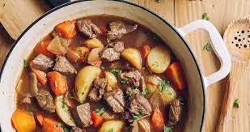

Apple Cider Stew

Apple soup is a soup prepared using apples as a primary ingredient. The apples can be puréed, sliced, or boiled and used whole. Onions, carrots, parsnip and pumpkin are used in some preparations.
Some recipes use chicken or vegetable broth or stock, while some others use water or apple cider. Additional ingredients can be added according to taste, such as cinnamon, lemon juice, sugar, ginger, curry powder, salt and pepper.
It is sometimes served as an appetizer.
Ingredients
- 1 pound beef stew meat, cut into bite-size pieces
- 2 teaspoons all-purpose flour
- ½ teaspoon salt
- ¼ teaspoon ground black pepper
- ⅛ teaspoon dried thyme (Optional)
- 2 teaspoons vegetable oil
- 2 ½ cups apple cider
- 4 carrots, sliced
- 3 potatoes, chopped
- 2 small Fuji apples - peeled, cored, and chopped
- 1 cup chopped onion
- 1 cup water
- 1 stalk celery, chopped (Optional)
- 1 teaspoon salt
- ¼ teaspoon dried thyme (Optional)
Directions
- Combine the beef stew meat with the flour, 1/2 teaspoon salt, the black pepper, and 1/8 teaspoon thyme in a bowl; toss to coat evenly.
- Heat 2 teaspoons oil in a pot; cook the stew meat in the hot oil until completely browned, 5 to 7 minutes.
Pour the apple cider over the beef, reduce heat to medium low, and simmer the mixture until the beef is tender, about 1 hour.
- Add the carrots, potatoes, apples, onion, water, celery, 1 teaspoon salt, and 1/4 teaspoon thyme to the pot;
continue cooking at a simmer until the vegetables are tender, about 30 minutes more.